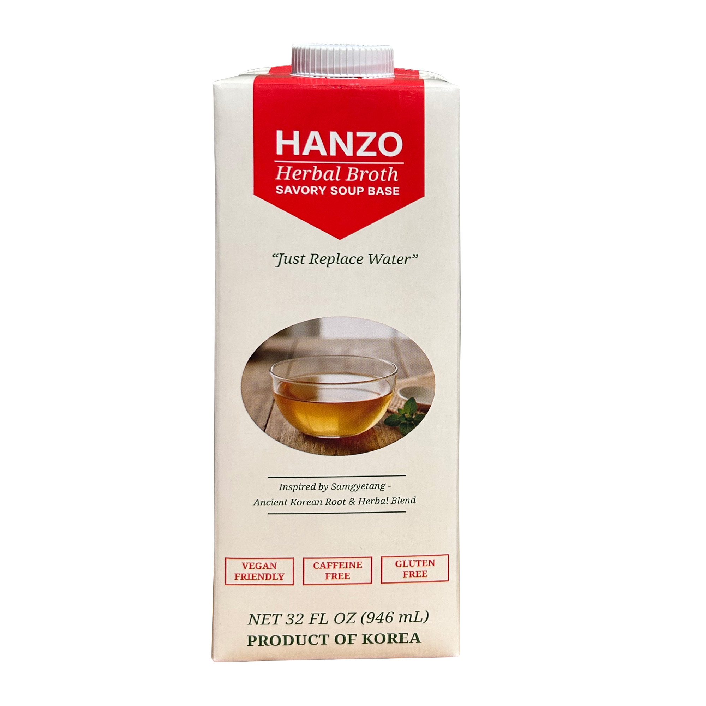

01 · Cook
Replace water or stock.
Use it in place of water or stock for soups, stews, rice, grains, noodles, braises, meat, and seafood dishes.

Ready-to-use Korean herbal broth
One mild, savory broth for everyday cooking—and warm sipping.
Made with five traditional botanicals, HANZO brings Korean-inspired herbal character to everyday American kitchens. Use it in place of water or stock in soups, stews, noodles, rice, meat, and seafood dishes—or enjoy it warm by the cup.
Nutrition values are per 1 cup (240 mL) serving. Refer to the package for complete ingredient, allergen, and Nutrition Facts information.
One carton, two versatile uses
Use HANZO as a ready-to-use broth for everyday meals, with the option to enjoy it warm by the cup.
01 · Cook
Use it in place of water or stock for soups, stews, rice, grains, noodles, braises, meat, and seafood dishes.
02 · Sip
Serve chilled or warm gently on the stovetop or in a microwave-safe cup. Enjoy as-is, or dilute 1:1 for a lighter taste.
WAYS TO COOK WITH HANZO
Use HANZO in place of water or stock to add mild, savory botanical depth without overpowering the other ingredients.
Build a flavorful base for comforting soups, stews, and hot pots.
Use HANZO as the cooking liquid for rice, porridge, and other grains.
Add savory botanical depth to noodle soups, broths, and sauces.
Use it as a gentle braising liquid for vegetables, tofu, meat, or seafood.
Simmer or cook beef, pork, and chicken with balanced savory flavor.
Complement fish and shellfish without overpowering their natural flavor.
Everyday versatility
HANZO adds mild herbal and savory depth to soups, stews, rice, noodles, vegetables, meat, and seafood without overpowering the other ingredients.
Five botanicals
HANZO combines five botanicals selected for a balanced, mild, and savory profile:
Simple nutrition
Four 1-cup servings per carton, with straightforward nutrition information.
Use & storage
See HANZO in action
See how HANZO adds mild, savory depth to everyday cooking—and can also be enjoyed warm by the cup.
Product of Korea
Check current purchase availability or contact our team about retail, foodservice, and distribution opportunities.